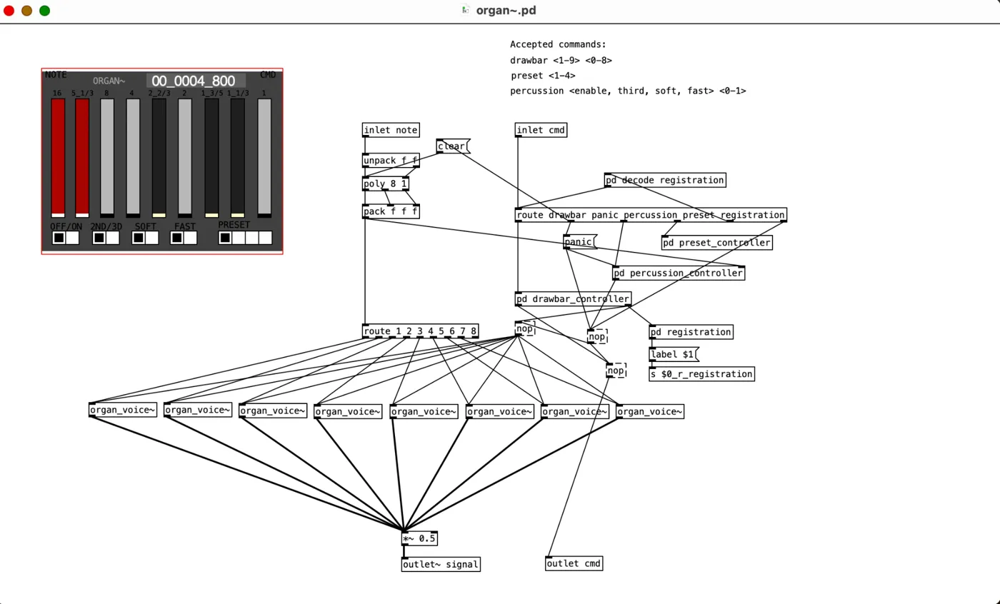
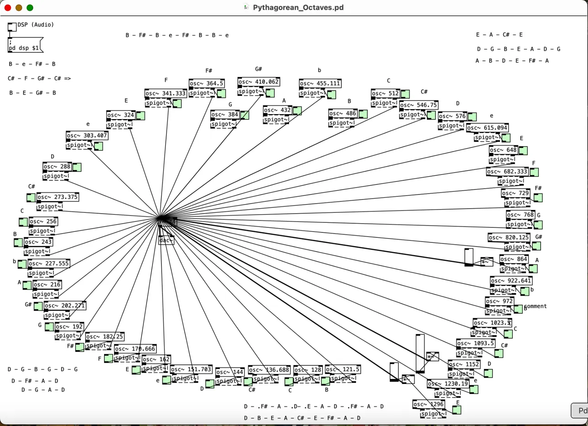
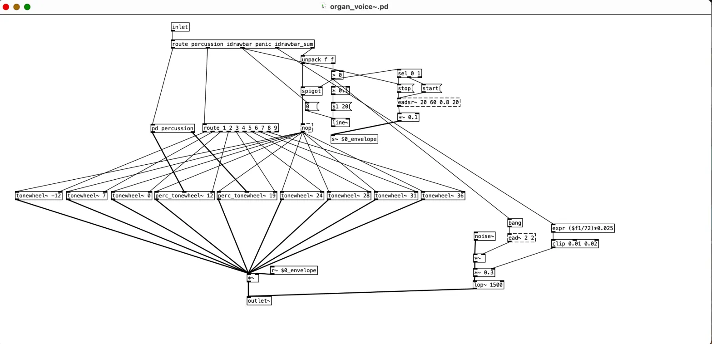

Gallery
Here is a collection of patches I've created and used for my music. Click on the image to view the patch in detail.

This organ patch features a visual drawbar interface with polyphonic voice control.

This patch uses Pythagorean tuning across multiple octaves to generate precise frequency ratios for each note in the scale.

An organ voice synthesizer patch with a drawbar and tonewheel generation to create classic organ tones.